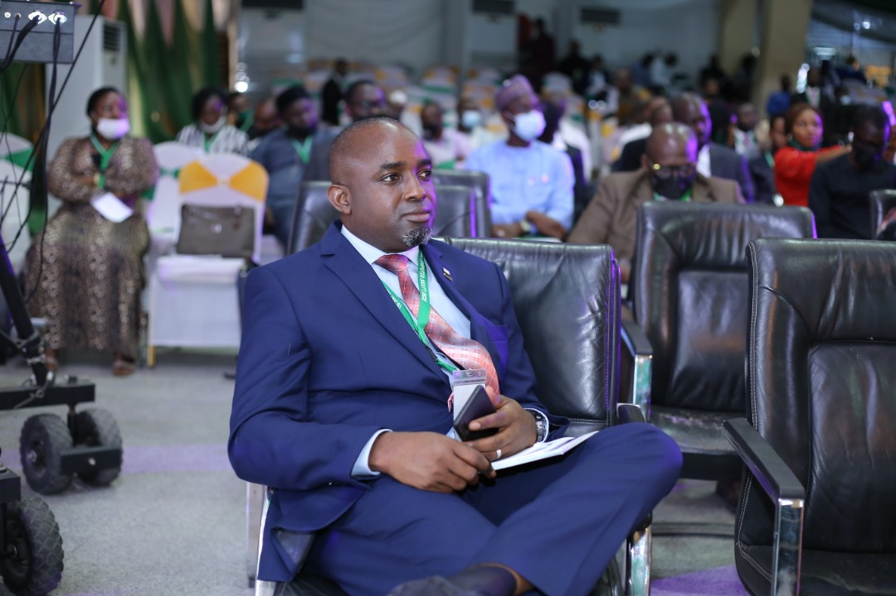

I AM AYODEJI REX ABITOGUN, FNCS.
#Vote For The Best Candidate
Ayodeji Rex Abitogun is a recognized leader and advocate of technology entrepreneurship and sustainable digital transformation. He is the Lead Consultant/Chief Executive officer of Management Edge Limited, an information technology consulting firm assisting individuals, governments, and organizations in achieving sustainable digital transformation.
.JPG)

About
Mr. Abitogun is a chartered IT professional with many industry certifications. He is a fellow and a member of the National Executive Council of the Nigeria Computer Society, where he currently serves as the Chairman Conferences Committee (CCC). He is also a member of the Institute of Directors (IoD), the Project Management Institute (PMI), the Information Systems Audit and Control Association (ISACA), the Association of Computer Machinery (ACM), and the Association of Change Management Professionals. He enjoys playing football, swimming, and traveling.
With two decades of experience in the information technology industry, Rex has distinguished himself in leading diverse teams delivering major IT projects for governments and private organizations within and outside Nigeria. He has adequate experience in IT service delivery, Project Management, New Product development, and business sustainability strategy.
-What I Will Offer-
Our Mission & Vision
My Vision is to run an association where everyone opinion and contributions are respected and valued for growth and sustainability
-
ADVOCACY
Working with relevant stakeholders, We will organize a series of value-packed events that will enhance the visibility of NCS, encourage the adoption of information technology practice in Nigeria and beyond
-
INCLUSIVENESS
We will work with relevant stakeholders to develop a Society where members' opinions will be respected, views will be sought, and voices will be heard. Specifically, Decisions affecting our growth will be based on inputs and consultations with our interest groups, chapters, and partners.
-
EMPOWERMENT
We embark on new innovation and technological dissemination for farmers to help improve thier crop yeilds, thereby increasing income. Our activities also helps to stengthen the resilence of the farmers to challenges like climate, pest and diseases attack that may pose a threat to crops.
-
INNOVATION
I will work with NEC and relevant stakeholders to promote innovation by partnering with industry and academia through Reaserch and Development
-
FUNDING
we will seek collaboration with relevant organisations and seek funding for our various initiatives including NCS building, Youth innovation programmes, stratups etc.
-Why Choose Rex-
Reasons to Choose Rex
Opinion and contributions are respected and valued for growth and sustainability
-
01
Leadership
To provide quality leadership
-
02
Value Teams
To build an association of dedicated members
-
03
Improve
Make NCS preferred IT body
Mr Ayodeji Rex Abitogun
FNCS
Life is about service. The best form of service is the one offered without expecting anything in return.
-My Gallery-
View Some Images
-
-
.jpg)
-
.jpg)
-

-
.jpg)
-

-
.jpg)